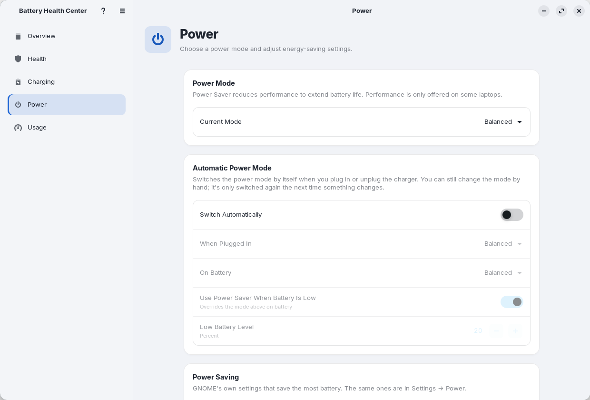
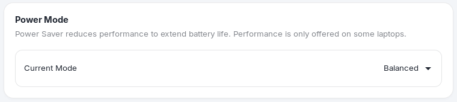
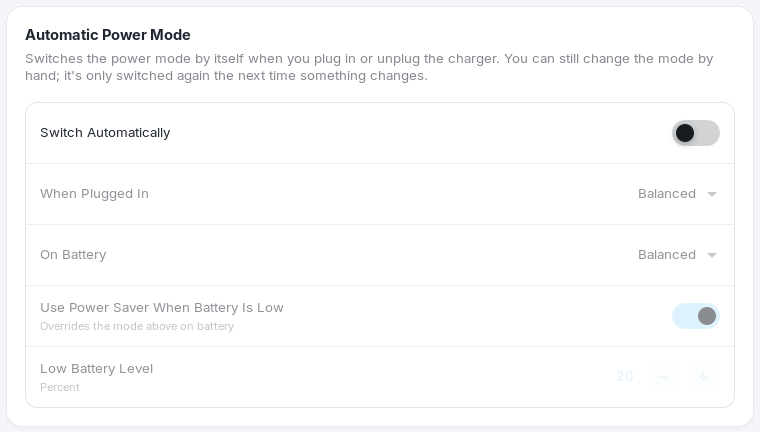
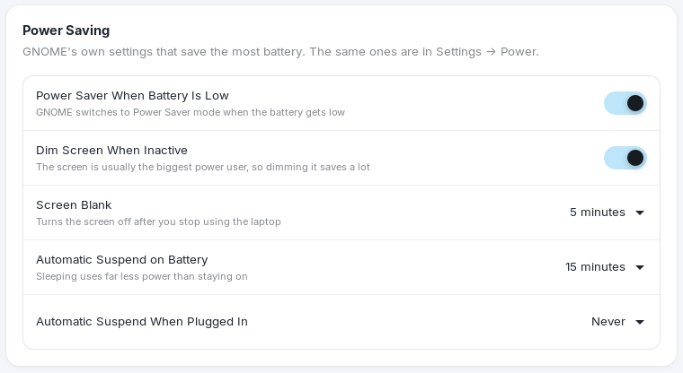
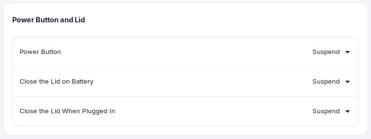
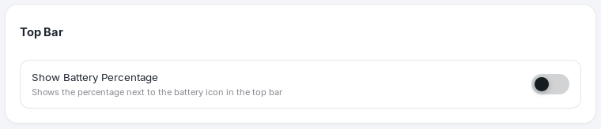

Power
The Power page puts the most useful power options in one place: the power mode, a way to switch it automatically, and the GNOME settings that save the most battery. Everything here is shown only if your system supports it.

Power mode#

Power Saver, Balanced or Performance, using the same system service as GNOME's quick settings. Power Saver reduces performance to extend battery life. Performance is only offered on some laptops and drains the battery faster. The setting is shared with the GNOME panel, so a change made there shows up here and the other way around.
Note. If the Power Profiles Daemon is not running, the page says "Power Mode and Automatic Power Mode Aren't Available", because the mode can neither be read nor changed.
Automatic power mode#

Turn on Switch Automatically and the app changes the power mode when you plug in or unplug the charger.
- When Plugged In and On Battery: choose the mode for each state. A typical setup is Performance on the charger and Power Saver on battery.
- Use Power Saver When Battery Is Low overrides the on-battery mode once the charge falls to the Low Battery Level (20% by default).
- You can still change the mode by hand at any time. It is only switched again the next time something changes (the charger is connected or removed).
Power saving#

These are the same settings as Settings → Power, collected in one place:
| Setting | What it does |
|---|---|
| Power Saver When Battery Is Low | GNOME switches to Power Saver mode when the battery gets low. |
| Dim Screen When Inactive | Dims the screen when you stop using the laptop. The screen is usually the biggest power user, so this saves a lot. |
| Automatic Screen Brightness | Adjusts the brightness to the light around you (needs an ambient light sensor). |
| Screen Blank | Turns the screen off after you stop using the laptop. Choose from 1 to 15 minutes, or Never. |
| Automatic Suspend on Battery | Sleeps after a time of inactivity on battery (5 minutes to 2 hours, or Never). Sleeping uses far less power than staying on. |
| Automatic Suspend When Plugged In | The same, on the charger. |
Power button and lid#

Choose what happens when you press the power button and when you close the lid, separately on battery and on the charger. The options include Suspend, Hibernate, Turn Off the Screen, Shut Down, Log Out, Ask What to Do and Do Nothing; you only see the ones your system supports.
Top bar#

Show Battery Percentage shows the percentage next to the battery icon in the GNOME top bar.
Note. If GNOME's power settings cannot be found, this part of the page says "Power Saving and Power Button Settings Aren't Available". They need GNOME Settings Daemon. The page is the part of the app that is most tied to GNOME.